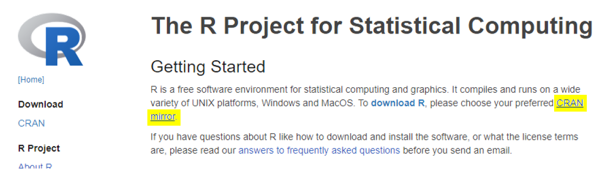

Quick Overview
- R (>=4.0).
SingleCellTK is an R based package, allowing users to run analysis in system command-line, R console, and R Shiny user interface. To get your machine fully equipped with singleCellTK, you must have R (>=4.0) pre-installed.
See more details on how to install R
- Python environment
Additionally, singleCellTK wraps a number of useful toolkits, where some of them are Python based. To enable this part of functionality, users need to get Python (v3.x) and a set of Python packages built. The fast pip command can be used to easily install all the required dependencies as shown below:
pip install scipy numpy astroid six scrublet scanpy bbknn scanoramaSee more details for setting up Python Environment for singleCellTK
- singleCellTK
With R successfully installed, users can now install singleCellTK to your local system. For quick start, Bioconductor users can directly install our released version with the following command:
if (!requireNamespace("BiocManager", quietly = TRUE))
install.packages("BiocManager")
BiocManager::install("singleCellTK")See more details about custom installation of singleCellTK
For users who would like to perform console interactive analysis, we strongly suggest that you have RStudio installed.
Details
Install R (>=4.0)
Users can go to R Official Site to choose the preferred installer.
On the site, users will need to first specify a CRAN mirror. CRAN is a network of servers around the world that store approved R dependencies. Specifying a mirror that is the nearest to you helps minimize network load.

Linux, Windows and MacOS users will be able to find the corresponding installer at the top of the page after choosing a mirror.

Install singleCellTK
Latest Release (Bioconductor)
Our latest stable release is available on BioConductor. BioConductor is a distribution platform for biology-related packages. The page for singleCellTK can be found here.
Run the following command in R console to install singleCellTK from Bioconductor:
if (!requireNamespace("BiocManager", quietly = TRUE))
install.packages("BiocManager")
BiocManager::install("singleCellTK")Development version (GitHub)
We regularly push new updates to our source code on our Github development branch.
The simplest way to install the development version is by running the following command:
if (!requireNamespace("devtools", quietly = TRUE)) {
install.packages("devtools")
}
devtools::install_github("compbiomed/singleCellTK@devel")Meanwhile, the source code for the stable releases can be downloaded from here.

To install from source code, you need to first download the tarball file (ending with .tar.gz), which is a compressed file for the whole directory. Then in R console, run the following command:
# REPLACE {PATH} with the path you place the downloaded tarball file
# REPLACE {VERSION} with the version number in the filename
install.packages("{PATH}/singleCellTK_{VERSION}.tar.gz", repos = NULL)Install Python Dependencies
singleCellTK can successfully be loaded without a Python installation. However, some parts of the toolkit require a live Python environment. For example, the quality control and batch correction sections utilize Python packages, tools and dependencies.
Non-Python users
If you do not have Python installed previously and do not plan to use it later, we have prepared a simple command to minimize the workload for the ease of the users. After installing singleCellTK in your R console run the following command:
library(singleCellTK)
sctkPythonInstallConda()
### Alternatively
# sctkPythonInstallVirtualEnv()Work with Python
If you would like to start to work with Python or are already an experienced Python user, here we skip the approach to the Python installation. If you have a standalone Python installation, it is not necessary to run the command above because it is likely to create a redundant Miniconda copy in your machine. For the list of dependencies that are required, please refer to the pip command at the top of this page, and you can also replace pip with conda.
If you would like to work in a Python virtual environment (“venv”) or a Conda environment, and have already created one, please run the environment selecting function in R console before starting to analyze your data. See the general Python environment instructions below to activate the Python environment to use with the toolkit.
For all users
If you ran sctkPythonInstallConda() (or sctkPythonInstallVirtualEnv()) directly, or have created your own singleCellTK specific environment (or venv), it is important that you activate the environment before starting to perform any analysis in the toolkit. Otherwise, the toolkit may not be able to properly locate the required dependencies and may result in unexpected behavior or crashes.
### For Python venv user
selectSCTKVirtualEnvironment("{NAME of your VENV}")
### For conda environment user
selectSCTKConda("{NAME of your VENV}")Troubleshooting Installation
BioConductor Versioning
For the majority of users, the commands above will install the latest version of the singleCellTK without any errors.
Rarely, you may encounter an error due to previously installed versions of some packages that are required for the singleCellTK. If you encounter an error during installation, use the commands below to check the version of Bioconductor that is installed:
if (!requireNamespace("BiocManager", quietly=TRUE))
install.packages("BiocManager")
BiocManager::version()If the version number is not 3.6 or higher, you must upgrade Bioconductor to install the toolkit:
BiocManager::install()After you install Bioconductor 3.6 or higher, you should be able to install the toolkit. If you still encounter an error, ensure your Bioconductor packages are up to date by running the following command.
BiocManager::valid()If the command above does not return TRUE, run the following command to update your R packages:
BiocManager::install()Then, try to install the toolkit again.
Python and Reticulate
singleCellTK adopts reticulate to connect R with Python. If the specific functions in singleCellTK, which require Python dependencies, do not properly start to run after you have installed the dependencies or restart the R session, please try to specify the correct Python executable/binary file in a new R session (where “new” means no Python or reticulate related operations have been performed).
library(reticulate)
use_python("{PATH to the correct Python exexutable/binary file}")You can always use reticulate::py_config() to check what specific Python version you are using and what other versions are available. py_config() configures the R-to-Python connection at once, so you will have to restart the R session if you need to change the configuration with use_python() after you have the check done.
If you still encounter an error, please open an issue at our GitHub repository and we’d be happy to help.
Develop singleCellTK
To contribute to singleCellTK, follow these steps:
Note: Development of the singleCellTK is done using the latest version of R.
- Fork the repo using the “Fork” button at the top-right corner of our GitHub repository page.
- Download a local copy of your forked repository
git clone https://github.com/{username}/singleCellTK.git- Open Rstudio
- Go to “File” -> “New Project” -> “Existing Directory” and select your git repository directory
- In the top right panel, switch to “Git” tab and switch the current working branch to “devel” since all development updates are made to our “devel” branch.
You can then make your changes and test your code using the Rstudio build tools. There is a lot of information about building packages available here: http://r-pkgs.had.co.nz/.
Information about building shiny packages is available here: http://shiny.rstudio.com/tutorial/.
When you are ready to upload your changes, commit them locally, push them to your forked repo, and make a pull request to the compbiomed singleCellTK repository.
Report bugs and request features on our GitHub issue tracker.
Join us on slack!